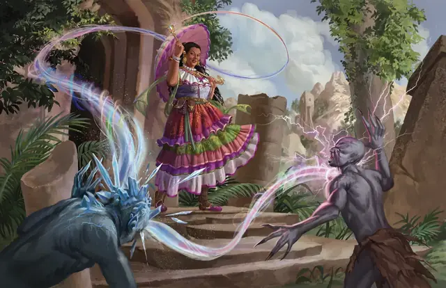

Хроматический шар
Chromatic Orb
1 уровень, Воплощение

Время сотворения Действие
Дистанция 90 футов
Компоненты В, С, М (бриллиант стоимостью не менее 50 ЗМ)
Длительность Мгновенная
Подклассы Драконье чародейство (Чародей)
Вы метаете шар энергии в цель в пределах дистанции. Выберите тип урона: Звук, Кислота, Огонь, Холод, Электричество или Яд; затем совершите дальнобойную атаку заклинанием по цели. При попадании цель получает 3к8 урона выбранного типа.
Если вы выбрасываете одинаковые числа на двух или более костях, шар перескакивает на другую цель в пределах 30 футов от предыдущей на ваш выбор. Совершите по этой цели новый бросок атаки и новый бросок урона; при этом шар не может перескочить вновь, если вы не сотворяли заклинание с ячейкой 2-го уровня или выше.
Используя ячейку заклинания большего уровня. Урон увеличивается на 1к8 за каждый уровень ячейки выше 1-го. Количество раз, когда шар может перескочить на новую цель, равно уровню ячейки, но каждое существо может быть выбрано целью только один раз за сотворение заклинания.